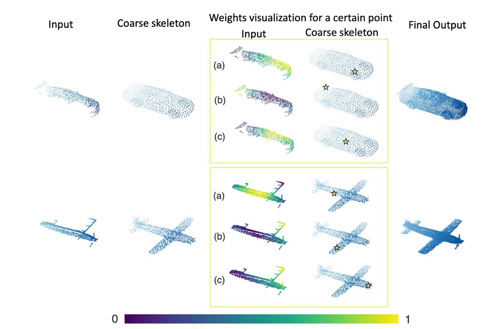
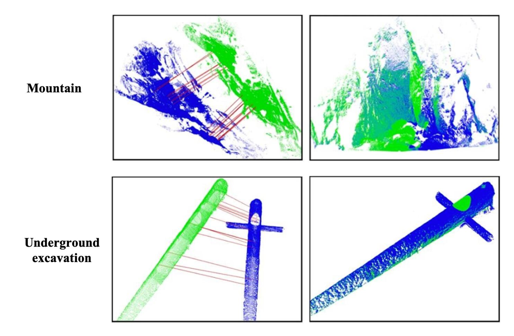
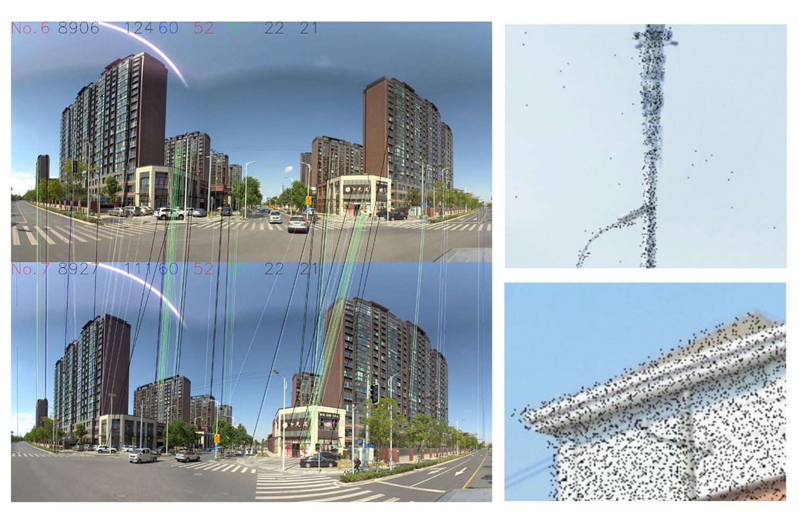
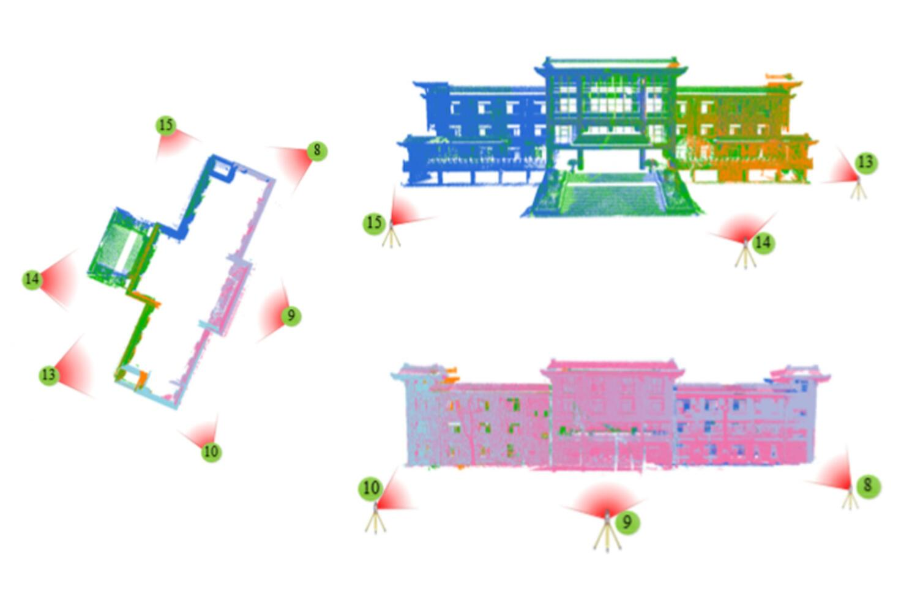
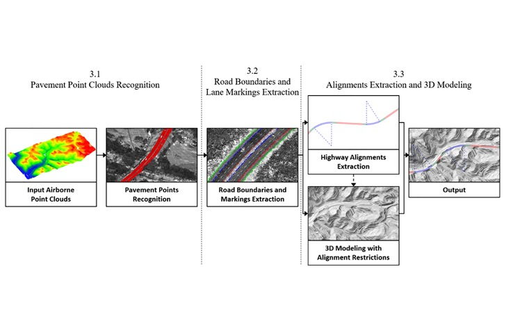
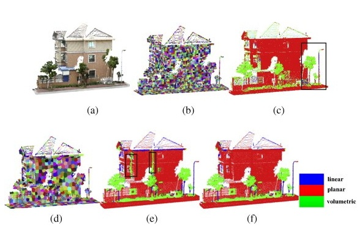
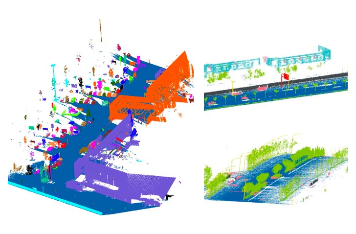
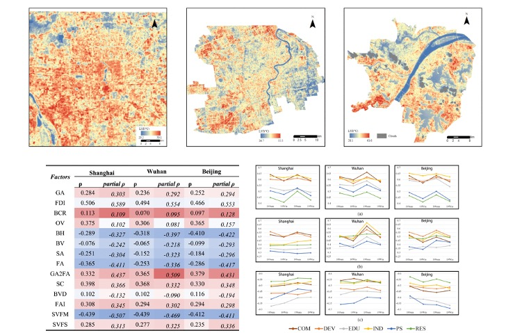
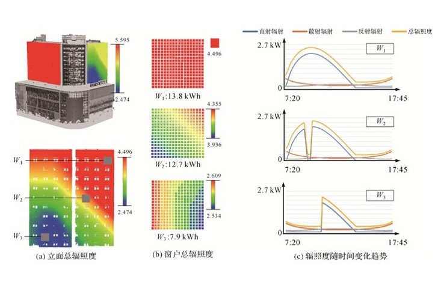
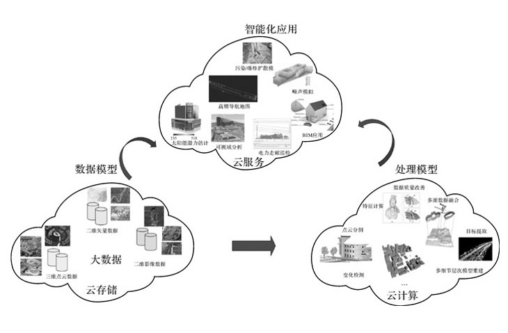

View by [Year], [Topic] or [Journal].
* denotes equal contributions and † denotes the corresponding author.
3D Reconstruction
You Only Hypothesize Once: Point Cloud Registration with Rotation-equivariant Descriptors
Haiping Wang*, Yuan Liu*, Zhen Dong†, Wenping Wang
ACM MM 2022 (CCF-A)
[Paper]
[Code]
[Project]
PC2-PU: Patch Correlation and Position Correction for Effective Point Cloud Upsampling
Chen Long*, Wenxiao Zhang*, Ruihui Li†, Hao Wang, Zhen Dong,
Bisheng Yang
ACM MM 2022 (CCF-A)
[Paper]
[Code]

Point Cloud Completion Via Skeleton-Detail Transformer
Wenxiao Zhang, Zhen Dong, Jun Liu, Qingan Yan, Chunxia Xiao
IEEE TVCG 2022 (IF:5.226)
[Paper]
AdaFit: Rethinking Learning-based Normal Estimation on Point Clouds
Runsong Zhu*, Yuan Liu*, Zhen Dong†, Yuan Wang, Tengping Jiang,
Wenping Wang, Bisheng Yang†
ICCV 2021 (CCF-A, Oral)
[Paper]
[Code]

JoKDNet: A joint keypoint detection and description network for large-scale outdoor TLS point clouds
registration
Yuan Wang, Bisheng Yang†, Yiping Chen, Fuxun Liang, Zhen Dong†
INT J APPL EARTH OBS 2021 (IF:7.672)
[Paper]

Automatic Registration of Mobile Mapping System Lidar Points and Panoramic-Image Sequences by Relative
Orientation Model
Ningning Zhu, Bisheng Yang, Zhen Dong, Chi Chen, Xia Huang, Wen Xiao
PE&RS 2021 (IF:1.469, Esri Award for Best Scientific Paper in GIS - 1st Place)
[Paper]
P2-net: Joint description and detection of local features for pixel and point matching
Bing Wang, Changhao Chen, Zhaopeng Cui, Jie Qin, Chris Xiaoxuan Lu, Zhengdi Yu, Peijun Zhao, Zhen Dong,
Fan
Zhu
CVPR 2021 (CCF-A)
[Paper]
[Code]
Learnable motion coherence for correspondence pruning
Yuan Liu, Lingjie Liu, Cheng Lin, Zhen Dong, Wenping Wang
CVPR 2021 (CCF-A)
[Paper]
[Code]
[Project]
A novel skyline context descriptor for rapid localization of terrestrial laser scans to airborne laser scanning
point
clouds
Fuxun Liang, Bisheng Yang†, Zhen Dong†, Ronggang Huang, Yufu
Zang, Yue Pan
ISPRS J 2020 (IF: 11.774)
[Paper]
Registration of large-scale terrestrial laser scanner point clouds: A review and benchmark
Zhen Dong, Fuxun Liang, Bisheng Yang†, Yusheng Xu, Yufu Zang, Jianping Li, Yuan Wang, Wenxia Dai, Hongchao
Fan†
ISPRS J 2020 (IF: 11.774, ESI highly cited)
[Paper]
[Dataset]
Hierarchical registration of unordered TLS point clouds based on binary shape context descriptor
Zhen Dong, Bisheng Yang, Fuxun Liang, Ronggang Huang, Sebastian Scherer
ISPRS J 2018 (IF: 11.774)
[Paper]
An efficient global energy optimization approach for robust 3D plane segmentation of point clouds
Zhen Dong, Bisheng Yang†, Pingbo Hu, Sebastian Scherer†
ISPRS J 2018 (IF: 11.774)
[Paper]

Automatic registration of large-scale urban scene point clouds based on semantic feature points
Bisheng Yang, Zhen Dong†, Fuxun Liang, Yuan Liu
ISPRS J 2015 (IF: 11.774)
[Paper]
Scene Understanding
Street-view Images Guided Street Furniture Inventory from Mobile Laser Scanning Point Clouds
Yuzhou Zhou, Xu Han, Mingjun Peng, Haiting Li, Bo Yang, Zhen Dong†, Bisheng Yang
ISPRS J 2022 (IF: 11.774)
[Paper]
A two-stage approach for road marking extraction and modeling using MLS point clouds
Xiaoxin Mi, Bisheng Yang†, Zhen Dong†, Chong Liu, Zeliang
Zong, Zhenchao Yuan
ISPRS J 2021 (IF: 11.774)
[Paper]

Highway alignments extraction and 3D modeling from airborne laser scanning point clouds
Yuzhou Zhou, Ronggang Huang, Tengping Jiang, Zhen Dong†, Bisheng
Yang†
INT J APPL EARTH OBS 2021 (IF:7.672)
[Paper]
A point-based deep learning network for semantic segmentation of MLS point clouds
Xu Han, Zhen Dong†, Bisheng Yang†
ISPRS J 2021 (IF: 11.774)
[Paper]
Automated 3D road boundary extraction and vectorization using MLS point clouds
Xiaoxin Mi, Bisheng Yang, Zhen Dong†, Chi Chen, Jianxiang Gu
IEEE T-ITS 2021 (IF: 9.551)
[Paper]
A novel binary shape context for 3D local surface description
Zhen Dong, Bisheng Yang†, Yuan Liu, Fuxun Liang, Bijun Li†,
Yufu Zang
ISPRS J 2017 (IF: 11.774)
[Paper]
[Code]
3D local feature BKD to extract road information from mobile laser scanning point clouds
Bisheng Yang†, Yuan Liu, Zhen Dong†, Fuxun Liang, Bijun Li,
Xiangyang Peng
ISPRS J 2017 (IF: 11.774)
[Paper]
Computing multiple aggregation levels and contextual features for road facilities recognition using mobile laser
scanning data
Bisheng Yang†, Zhen Dong†, Yuan Liu, Fuxun Liang, Yongjun
Wang†
ISPRS J 2017 (IF: 11.774)
[Paper]

Hierarchical extraction of urban objects from mobile laser scanning data
Bisheng Yang†, Zhen Dong†, Gang Zhao, Wenxia Dai
ISPRS J 2014 (IF: 11.774)
[Paper]

A shape-based segmentation method for mobile laser scanning point clouds
Bisheng Yang†, Zhen Dong†
ISPRS J 2013 (IF: 11.774)
[Paper]
Sustainable Development

Exploring the Impact of 2-D/3-D Building Morphology on the Land Surface Temperature: A Case Study of Three
Megacities in China
Xiaorui Li, Bisheng Yang, Gang Xu, Fuxun Liang, Tengping Jiang, Zhen Dong†
IEEE J-STARS 2021 (IF: 4.715)
[Paper]
A new method for 3D individual tree extraction using multispectral airborne LiDAR point clouds
Wenxia Dai, Bisheng Yang†, Zhen Dong†, Ahmed Shaker
ISPRS J 2018 (IF: 11.774)
[Paper]

基于多源点云的建筑物立面太阳能潜力估计
梁福逊, 杨必胜†, 黄荣刚, 董震, 李健平
测绘学报 2018
[Paper]
Others
点云智能处理
杨必胜, 董震
科学出版社 2020

点云智能研究进展与趋势
杨必胜†, 董震
测绘学报 2019
[Paper]